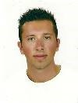

|  | Personal Information |
| WORK EXPERIENCE | |
| March 2013 - Now | Porter Crowne Plaza Hotel Promachon Eleftherias 2 Agios Athanasios, Limassol - 4103, Cyprus Business or Sector: Guest Relation |
| EDUCATION AND TRAINING | |
| October 2014 - Now | Bachelor of Science in Computer Science Frederick University, Limassol Cyprus |
| Semptember 2008 - June 2011 | High School Diploma |
| PERSONAL SKILLS | |
| Mother tongue(s) | German/Greek |
| Other Languages | English |
| Communication Skills | |
| Organisational/Managagerial skills | |
| Computer skills | |
| Other Skills | |
| Driving license | |